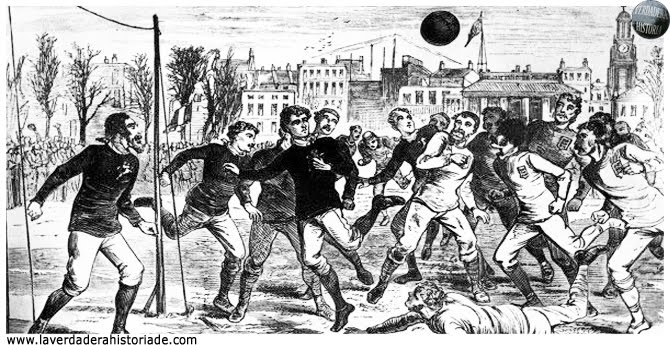
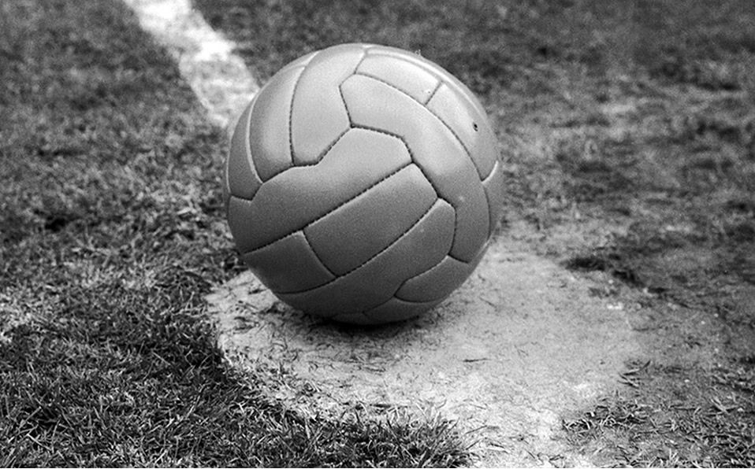
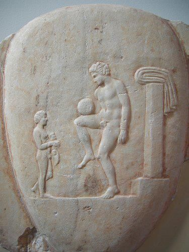

|  |
La historia moderna del deporte más popular del planeta abarca más de 100 años de existencia. Comenzó en el 1863, cuando en Inglaterra se separaron los caminos del "rugby-football" (rugby) y del "association football" (fútbol), fundándose la asociación más antigua del mundo: la "Football Association" (Asociación de Fútbol de Inglaterra), el primer órgano gubernativo del deporte. Ambos tipos de juego tiene la misma raíz y un árbol genealógico de muy vasta ramificación. Una profunda y minuciosa investigación ha dado con una media docena de diferentes juegos en los cuales hay aspectos que remiten el origen y desarrollo histórico del fútbol. Evidentemente, a pesar de las deducciones que se hagan, dos cosas son claras: primero, que el balón se jugaba con el pie desde hacía miles de años y, segundo, que no existe ningún motivo para considerar el juego con el pie como una forma secundaria degenerada del juego "natural" con la mano.
|
| Todo lo contrario: aparte de la necesidad de tener que luchar con todo el cuerpo por el balón en un gran tumulto (empleando también las piernas y los pies), generalmente sin reglas, parece que, desde sus comienzos, se consideraba esta actividad como extremamente difícil y, por lo tanto, dominar el balón con el pie generaba admiración. La forma más antigua del juego, de la que se tenga ciencia cierta, es un manual de ejercicios militares que remonta a la China de la dinastía de Han, en los siglos II y III AC. |
 |
|  |
Se lo conocía como "Ts'uh Kúh", y consistía en una bola de cuero rellena con plumas y pelos, que tenía que ser lanzada con el pie a una pequeña red. Ésta estaba colocada entre largas varas de bambú, separadas por una apertura de 30 a 40 centímetros. Otra modalidad, descrita en el mismo manual, consistía en que los jugadores, en su camino a la meta, debían sortear los ataques de un rival, pudiendo jugar la bola con pies, pecho, espalda y hombros, pero no con la mano.
Del Lejano Oriente proviene, mientras tanto, una forma diferente: el Kemari japonés, que se menciona por primera vez unos 500 a 600 años más tarde, y que se juega todavía hoy en día. Es un ejercicio ceremonial, que si bien exige cierta habilidad, no tiene ningún carácter competitivo como el juego chino, puesto que no hay lucha alguna por el balón. En una superficie relativamente pequeña, los actores deben pasárselo sin dejarlo caer al suelo.
Mucho más animados eran el "Epislcyros" griego, del cual se sabe relativamente poco, y el "Harpastum" romano. Los romanos tenían un balón más chico y dos equipos jugaban en un terreno rectangular, limitado con líneas de marcación y dividido con una línea media. El objetivo era enviar el balón al campo del oponente, para lo cual se lo pasaban entre ellos, apelando a la astucia para lograrlo. Este deporte fue muy popular entre los años 700 y 800, y si bien los romanos lo introdujeron en Gran Bretaña, el uso del pie era tan infrecuente que su ascendencia en el fútbol es relativa |